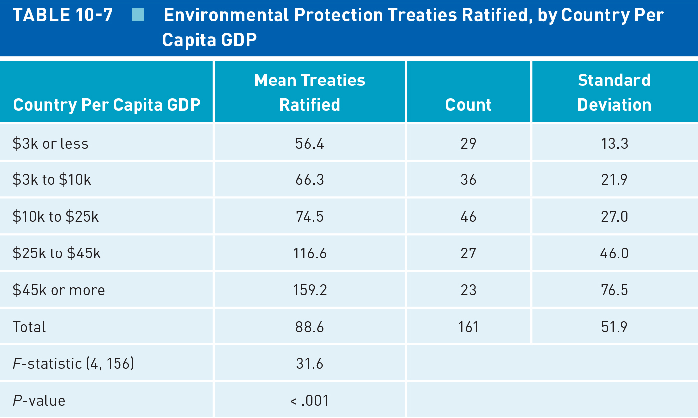
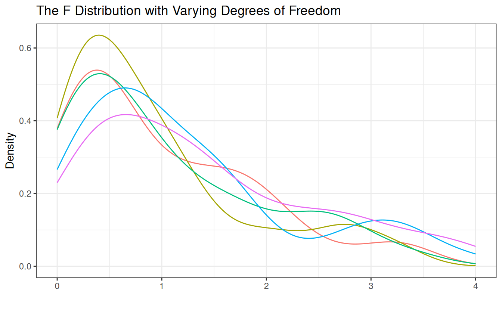
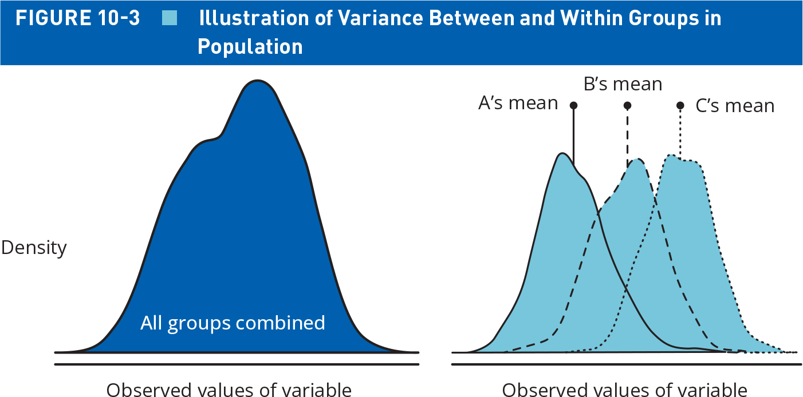
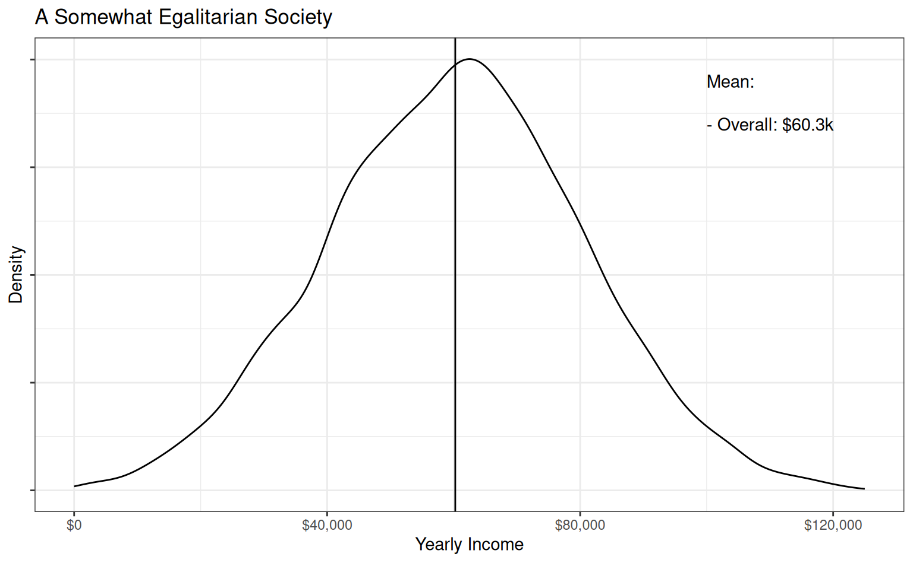
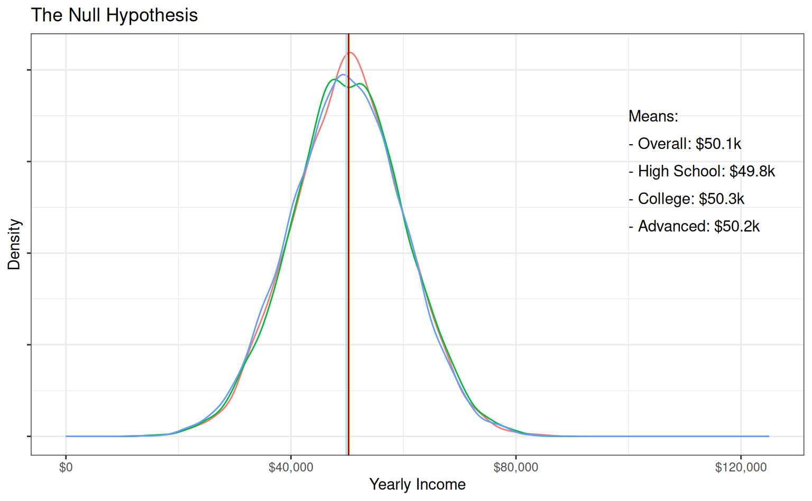
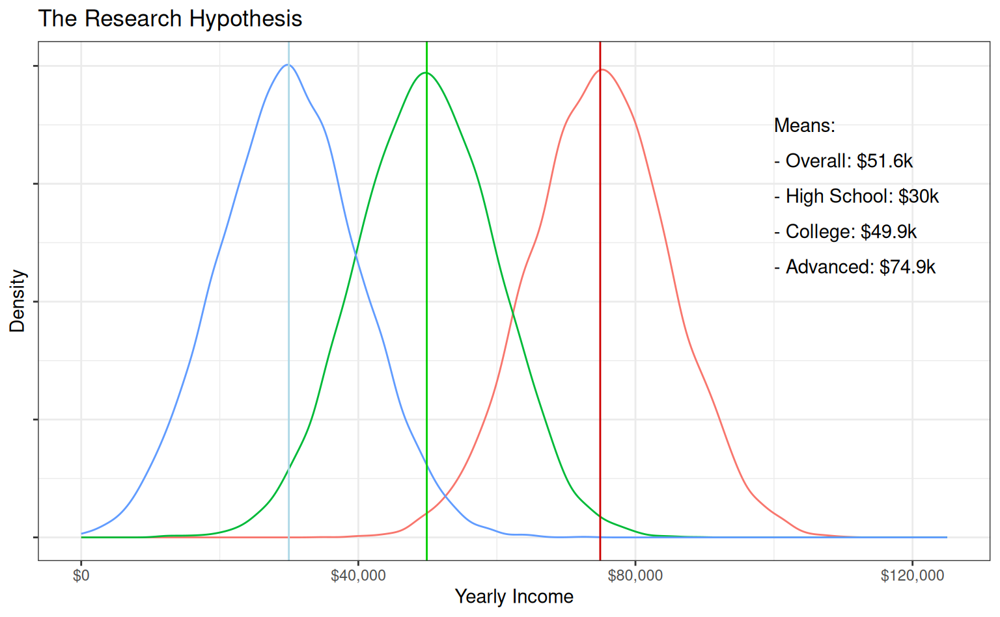
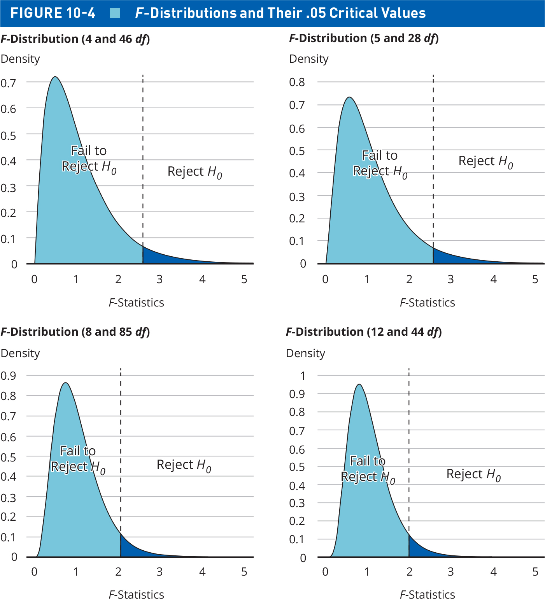

| Regime Type | France | Spain | UK | Total |
|---|---|---|---|---|
| Dictatorship | 16 | 5 | 18 | 39 |
| Parliamentary | 0 | 2 | 13 | 15 |
| Presidential | 3 | 13 | 9 | 25 |
Today’s Agenda
Making Statistical Inferences
Null Hypothesis Testing with Multiple Groups
Analysis of Variance (ANOVA)
Notes: Null_Hypothesis_Testing.R
Justin Leinaweaver (Spring 2026)
Null Hypothesis Testing with A Chi-Square Distribution
\[ \chi^2 = \Sigma \frac{(f_o - f_e)^2}{f_e} \]

Does party ID influence how Americans view the seriousness of threats from Iran?
My Estimates (by hand)
\(\chi^2 \approx 319.83\)
\(df = 8\)
\(p = 2.5e^{-64}\)
Pearson's Chi-squared test
data: table(anes$threat.from.iran, anes$partyid3)
X-squared = 317.06, df = 8, p-value < 2.2e-16Analysis of Variance (ANOVA)

ANOVA and the F Distribution

ANOVA and the F Statistic

\[\text{F-statistic} = \frac{\frac{SS_{between}}{k-1}}{\frac{SS_{within}}{n-k}} \]


\[\text{F-statistic} = \frac{\frac{SS_{between}}{k-1}}{\frac{SS_{within}}{n-k}} \]

\[\text{F-statistic} = \frac{\frac{SS_{between}}{k-1}}{\frac{SS_{within}}{n-k}} \]
ANOVA and Null Hypothesis Testing

ANOVA and Null Hypothesis Testing
The distribution function for the F distribution
pf(q, df1, df2)
“q” is the value of the test statistic
“df1” is between group error degrees of freedom (k-1)
“df2” is within group error degrees of freedom (n-k)
| F-Statistic | Groups (k) | Sample Size (n) |
|---|---|---|
| 3.56 | 5 | 45 |
| 1.92 | 6 | 208 |
| 4.30 | 4 | 1,044 |
| 2.06 | 3 | 82 |
Analysis of Variance (ANOVA)
aggregate(x, data, FUN)
- “x” is the formula (outcome ~ predictor)
- “data” is the dataset
- “FUN” is the function
aov(formula, data)
- “formula” and “data” is same as above
summary()
Analysis of Variance (ANOVA)
\(H_A\): Presidential approval (ft.trump.post) is determined by partisan identity (partyid3)
\(H_o\): Presidential approval is NOT determined by partisan identity
Analysis of Variance (ANOVA)
\(H_A\): Presidential approval (ft.trump.post) is determined by partisan identity (partyid3)
\(H_o\): Presidential approval is NOT determined by partisan identity
Df Sum Sq Mean Sq F value Pr(>F)
partyid3 2 5882173 2941086 3644 <2e-16 ***
Residuals 7333 5918106 807
---
Signif. codes: 0 '***' 0.001 '**' 0.01 '*' 0.05 '.' 0.1 ' ' 1
944 observations deleted due to missingnessAnalyzing the US States with ANOVA
Categorical Variables
- abortlaws.3cat
- cig.tax.3cat
- cook.index3
- deathpen.status
- gay.policy
- gay.policy2
- gay.policy.con
- gay.support3
- giffords.grade
- gunlaws.3cat
- judge.selection
- lgbtq.equality.3cat
- medicaid.expansion
- pot.policy
- region
- religiosity3
- rtw
- secularism3
- tax.source
- term.limits
- unionized.4cat
- voter.id.law
For Next Class
Correlation and Simple Linear Regression
Read Chapter 11, p279-286
Complete three exercises from the textbook (details on Canvas)
Old slides
| Iran Threat | Democrat | Independent | Republican | Total |
|---|---|---|---|---|
| Not at all | \(\frac{(134-127)^2}{127} = .39\) | \(\frac{(181-124)^2}{124} = 26.2\) | \(\frac{(47-114)^2}{114} = 39.38\) | 362 (5%) |
| A little | \(\frac{(419-382)^2}{382} = 3.58\) | \(\frac{(436-372)^2}{372} = 11.01\) | \(\frac{(227-341)^2}{341} = 38.11\) | 1082 (15%) |
| Moderate amount | \(\frac{(911-815)^2}{815} = 11.31\) | \(\frac{(794-794)^2}{794} =0\) | \(\frac{(603-727)^2}{727} = 21.15\) | 2308 (32%) |
| A lot | \(\frac{(619-636)^2}{636} = .45\) | \(\frac{(598-620)^2}{620} =.78\) | \(\frac{(623-568)^2}{568} = 5.33\) | 1840 (25%) |
| A great deal | \(\frac{(463-586)^2}{586} = 25.82\) | \(\frac{(473-571)^2}{571} =16.82\) | \(\frac{(773-523)^2}{523} = 119.5\) | 1709 (23%) |